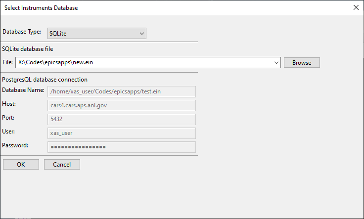
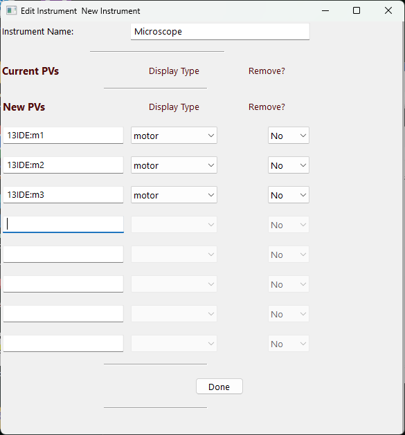
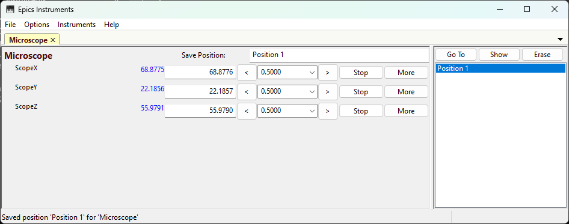
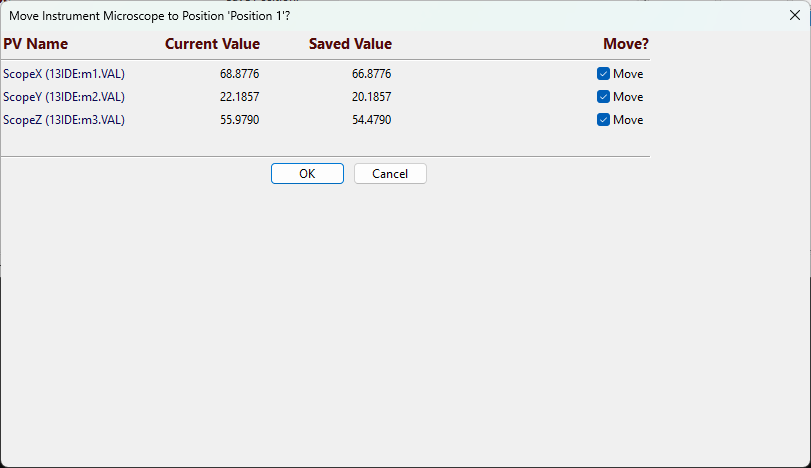
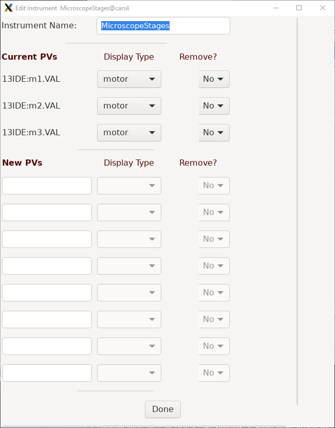
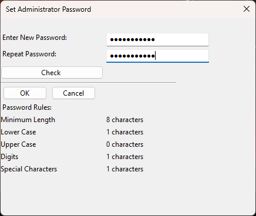
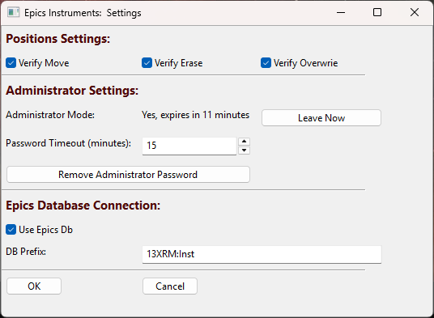
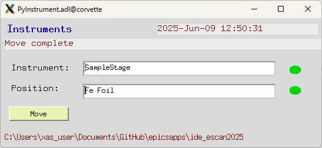

Epics Instruments#
Epics Instruments is a GUI application (using wxPython) that lets any user:
Organize PVs into Instruments: a named collection of PVs
Manage multiple Instruments with Notebook or tabbed interface.
Save Positions for any Instrument by name.
Restore Positions for any Instrument by name.
Saves all information into a single databases file that can be loaded later.
An administrator password can be set to allow both “expert mode” and “user mode”. Each Instrument can be optionally made “admin only” or available in “user mode”.
The Instruments application was originally written to replace and organize the multitude of similar MEDM screens that appear at many workstations using Epics.
Running Epics Instruments#
If epicsapps -m is run after installation, a folder called Epics
Apps will be created on your desktop which has a shortcut labeled
Instruments with a piano keyboard icon that can be used to launch the
Instruments application. From a command line terminal, you can also
use:
epicsapps instruments
{kind=link}

If this is your first time using the application, choose a name for your Instruments database, and hit return to create a new Instrument File. The next time you run Epics Instruments, it will remember which files you have recently used, and present you with a drop-down list of Instrument Files. Since all the definitions, positions, and settings are saved in a single file, restoring this file will recall the earlier session of instrument definitions and saved positions.
The Instruments database file can contain multiple Instruments. Each Instrument is a collection of Epics PVs. Each Instrument will also have a collection of Positions, which are just the locations of all the PVs in the Instrument at the time the Position was saved. Like a PV, each Instrument and each Position for an Instrument has a unique name.
Defining a New Instrument#
To define a new Instrument, select Create New Instrument from the
Instruments Menu. A screen will appear in which you can name the
instrument and the PVs that belong to it
{kind=link}

when you have added the PVs you want click the Done button. The
PVs will connect, and you will see a screen something like this
{kind=link}

For PVs that are motor .VAL positions, you get a row for each
motor to move it around. For other PVs, you will simply get an Entry
box to see its current value and be able to change it.
At any time, you can save the “current position” by typing a name in
the Save Position box and hit return. It will then appear in the
Position List on the right-hand side of the display. From this list,
you can highlight any saved Position and hit the Go To button
which will bring up a dialog window like this:
{kind=link}

to move all or a selected subset of the PVs to that saved Position.
Editing an Exisiting Instrument#
To change the definition of an instrument, use the Current
Instrument: Edit option from the Instruments menu.
{kind=link}

There are also dialogs from the Instruments menu to allow you to
erase many positions at once or add a position that is not the current
position of the Instrument.
The Instrument File#
All the information for definitions of your Instruments and their Positions are saved in a single file – the Instruments file. This is an SQLite database file, though it uses the default extension of ‘.ein’ (Epics INstruments).
You can copy, save, and use as many of Instrument Files as you like – you might want to have one for different stations or modes of operations. Since the Instrument File is an SQLite database file, and can be browsed and manipulated with external tools such as the sqlite3 command-line program. SQLite files can only be used safely by one application at a time, and can become corrupted if written to my multiple processes. Keep a backup, and avoid having a single Instrument file open by multiple applications.
If you are interested in using Epics Instruments from multiple applications, Postgresql can be used in place of SQLite. (Mysql or other database servers could probably be supported, but have not been tried). See Using PostgresQL and the EpicsScan Datatbase for more information.
Setting and Using and an Adminstrator Password#
It may be desirable to limit user access to some Instruments. That is, a beamline scientist may want to define Instruments that control upstream optics or detector configurations that are useful for setting up an experiment, but not allow users to change these without supervision. On the hand, there may be Instruments defined that the user is expected to use.
For this need, an Adminstrator Password can be set for each
Instruments file. To do this, use the Option->Set Administrator
Password menu which will bring up a dialog to set or reset a
password.
{kind=link}

The password must be fairly strong (8 or more characters, at least 1 upper case letter, 1 lower case letter, 1 digit, and 1 special character). The password will be encrypted using standard hashing methods and the encrypted string saved in the Instruments file. While this possword may be protecting equipment but not sensitive information, the encrypted string is saved in a readable file. It is recommended to not re-use a password that is used for more important information.
When a adminstrator password is set, the user of the application will be challenged for this password to do any of the following tasks:
edit the configuration settings.
change what Instruments are displayed.
create an Instrument.
edit or access any Instrument that is marked as admin only.
change the password.
When a user goes into “Admin Mode”, there is a time-out for staying in that mode. By default, this is 15 minutes, but it can be changed in the configuration window. When this time elapses, any Instrument that is currently shown but is marked as admin only will be removed from the display.
This timeout can be set from Options->General Settings:
{kind=link}

From this screen you can also leave Administrator Mode immediately or completely remove the Adminstrtator password so that no Adminsitrator Mode will be enabled.
Accessing Instruments and Positions with Epics#
You may want to be able to access Instrument and Positions from outside the Instruments application. For example, you may want to define an Instrument for “Detector Stages”, and save positions called “In” and “Out”. It would be helpful if you could move the detector to “In” or “Out” from Epics Channel Access, either from a script or a data collection application.
Instruments can be set up to respond to Channel Access puts and move an Instrument to a Position. To do this, use PyInstrument.db, and load that into an Epics IOC with a command like:
dbLoadRecords("PyInstrument.db","P=13XRM:, Q=Inst")
From the Options->General Settings menu (see above), you can
check the “Use Epics Db” box and entering the Prefix defined with the
dbLoadRecords command will then enable the Instruments program to
respond to Channel Access requests to move Instruments to Positions.
Using the PyInstrument.adl display file and an MEDM command like:
medm -x -macro "P=13XRM:,Q=Inst" /home/epics/adl/all/PyInstruments.adl
will then bring up a display screen like this
{kind=link}

where you can enter the name of an Instrument, enter the name of a Position, and hit the Move button to move to that position. Several Epics PVs listed in the table below are used for this communication. Note that the Instruments App itself must be running in order for these moves to happen.
Table of CA interface to Instruments These PVs will be used for the CA interface to Epics Instruments.
PV Name
Description
$(P)$(Q):InstName
Instrument Name
$(P)$(Q):PosName
Position Name
$(P)$(Q):InstOK
Flag for Instrument Name is valid
$(P)$(Q):PosOK
Flag for Position Name is valid
$(P)$(Q):Move
Command to Move
$(P)$(Q):Message
Runtime message
$(P)$(Q):TSTAMP
timestamp, showing Instrument is connected.
From pyepics, you could also do a move with:
from epics import get_pv, poll
prefix = '13XRM:Inst:'
move_pv = get_pv(f'{prefix}Move')
iname_pv = get_pv(f'{prefix}InstName')
pname_pv = get_pv(f'{prefix}PosName')
iok_pv = get_pv(f'{prefix}InstOK)
pok_pv = get_pv(f'{prefix}PosOK')
def move_instrument(instrument, position):
iname_pv.put(instname)
pname_pv.put(posname)
poll()
if iok_pv.get() == 0:
print(f"Could not find instrument '{instname}'")
elif pok_pv.get() == 0:
print(f"Could not find position '{posname}' for '{instname}'")
else:
move_pv.put(1)
move_instrument('SampleStage', 'Sample 1')
Using PostgresQL and the EpicsScan Datatbase#
If you want to have are using the EpicsScan application for data collection, you can also use its Postgres database as an Epics Instruments database. This requires a bit more setup, but allows mulitple client programs to access and use the Instruments at the same time.